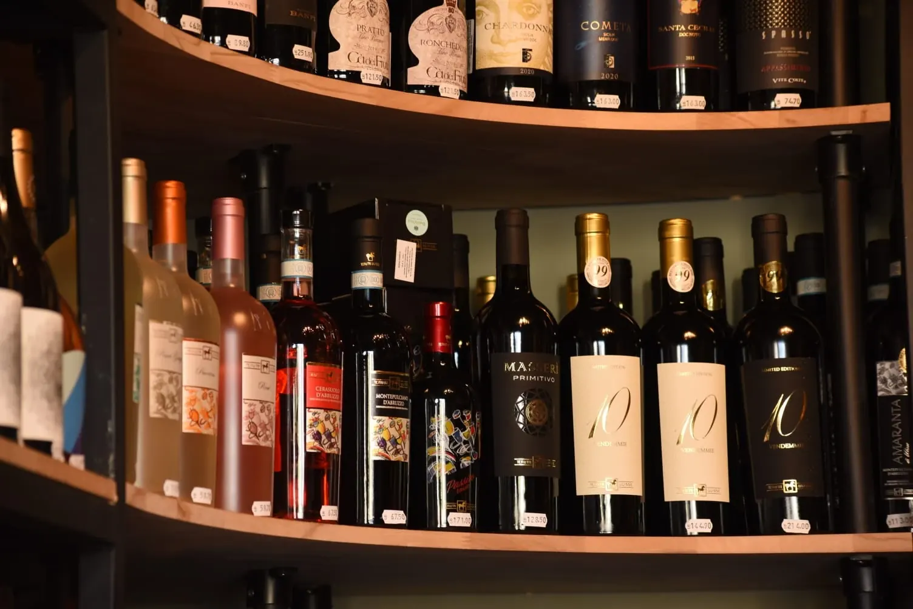
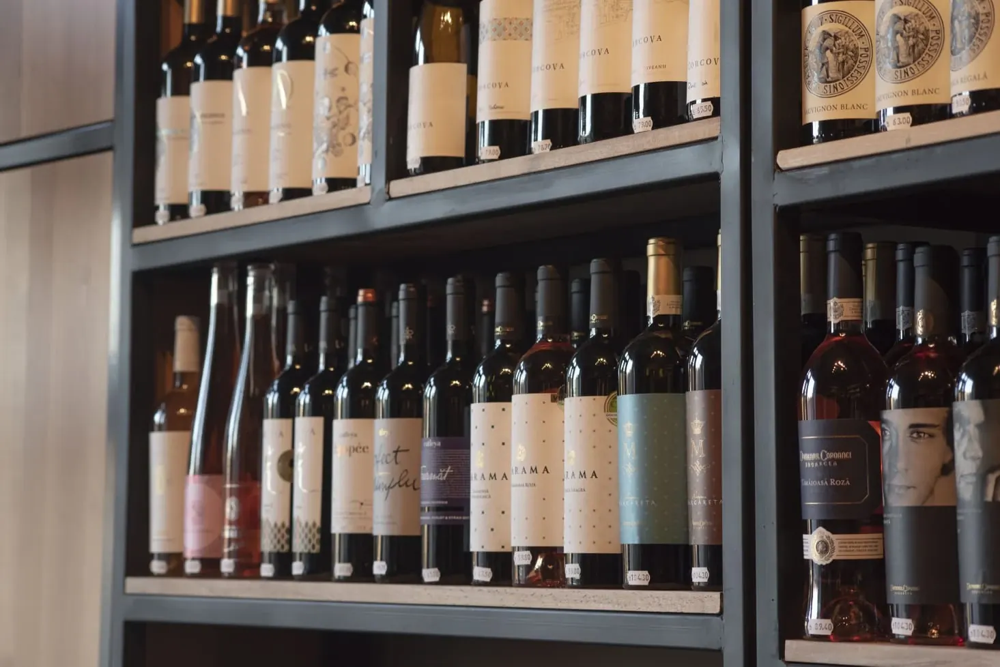
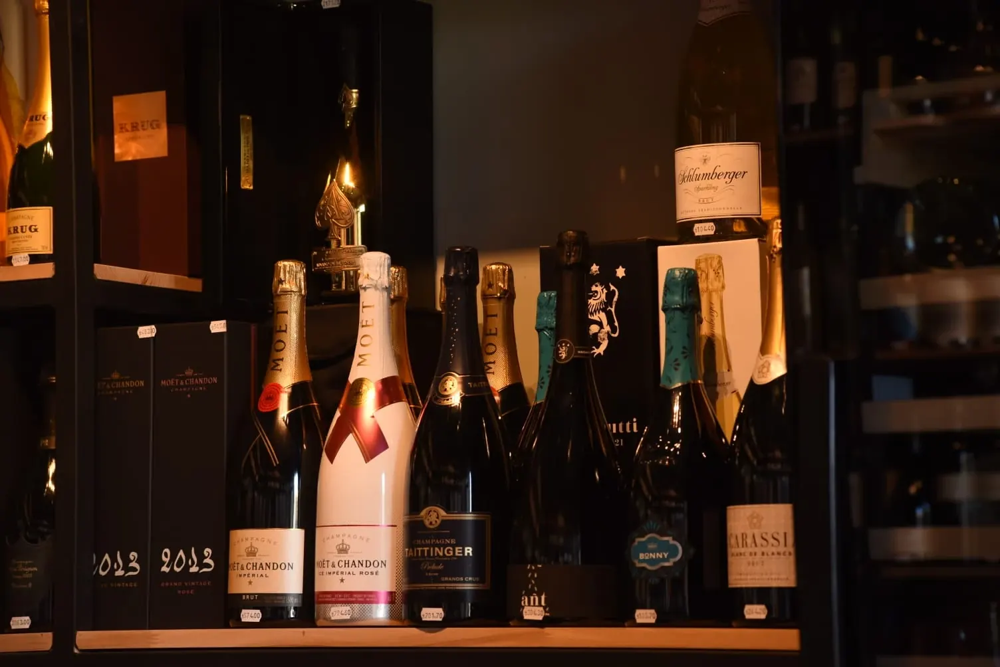
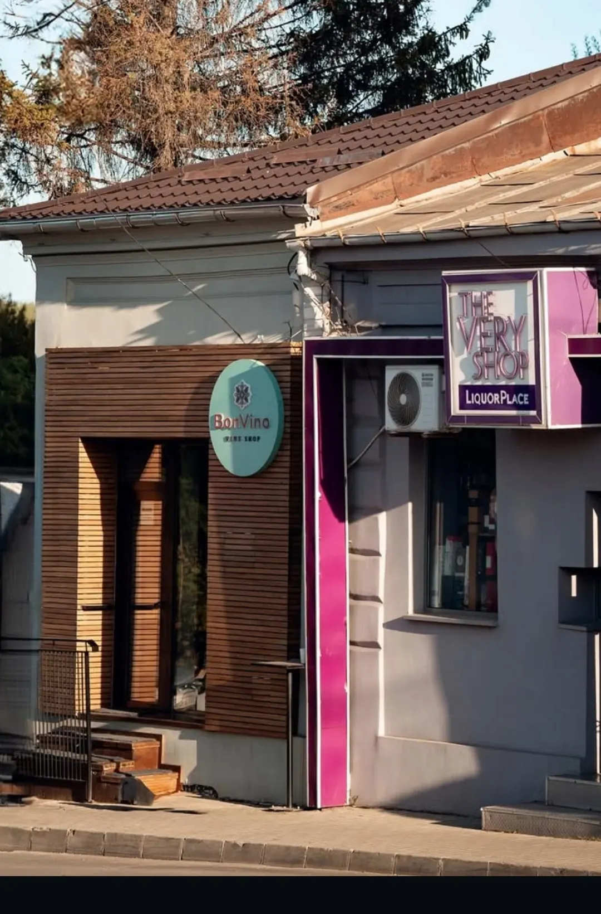
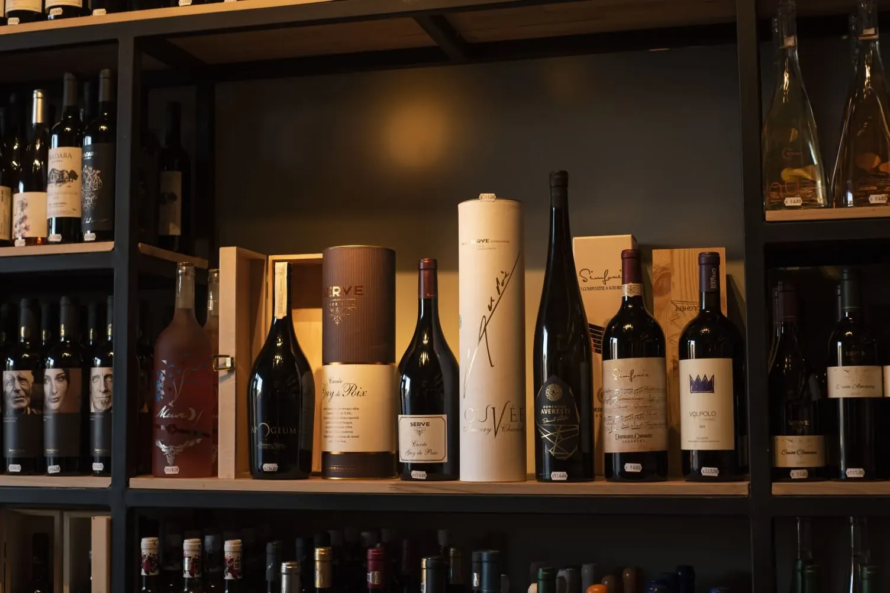
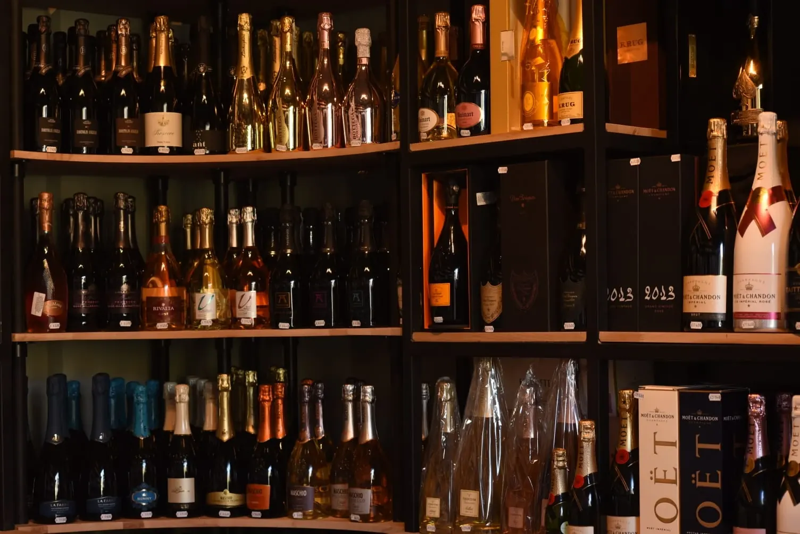
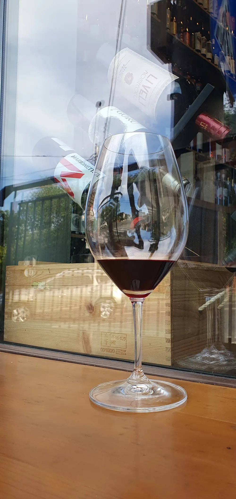

BonVino{{Magazin de vinuri · Grigore Ghica Vodă 3 · Iași|Wine shop · Grigore Ghica Vodă 3 · Iași|Garrafeira · Grigore Ghica Vodă 3 · Iași}}
{{Sticle românești, italiene și champagne pe rafturi de lemn. Spuneți-ne ce căutați — vă punem deoparte vinul potrivit.|Romanian and Italian bottles and champagne on wooden shelves. Tell us what you’re after — we’ll set the right wine aside for you.|Garrafas romenas, italianas e champagne em prateleiras de madeira. Diga-nos o que procura — guardamos-lhe o vinho certo.}}
{{Trei rafturi|Three shelves|Três prateleiras}}
{{Vinuri din regiuni cunoscute, alese una câte una. Dacă nu știți de unde să începeți, întrebați-ne.|Wines from well-known regions, chosen one by one. Not sure where to start? Ask us.|Vinhos de regiões conhecidas, escolhidos um a um. Não sabe por onde começar? Pergunte-nos.}}


{{Recenzii|Reviews|Opiniões}}
{{Clienții îl descriu ca pe o bijuterie ascunsă: o selecție mare, sticle alese cu grijă și oameni amabili care vă ajută să alegeți.|Customers describe it as a hidden gem: a wide selection, carefully chosen bottles and friendly people who help you pick.|Os clientes descrevem-na como uma joia escondida: muita escolha, garrafas escolhidas com cuidado e gente simpática que ajuda a escolher.}}
{{Spuneți-ne pentru ce|Tell us what for|Diga-nos para quê}}
{{O cină, un cadou, o seară cu prietenii. Primim cererea scrisă și vă răspundem cu ce avem pe raft.|A dinner, a gift, an evening with friends. We get your request in writing and reply with what’s on the shelf.|Um jantar, uma prenda, uma noite com amigos. Recebemos o pedido por escrito e respondemos com o que há na prateleira.}}
{{Scrieți cererea|Write your request|Escrever o pedido}}- {{Pentru ce e vinul|What the wine is for|Para que é o vinho}}{{cină, cadou, degustare, eveniment|dinner, gift, tasting, event|jantar, prenda, prova, evento}}
- {{Ce vă place|What you like|O que gosta}}{{roșu, alb, rose, spumant — sau un soi anume|red, white, rosé, sparkling — or a grape|tinto, branco, rosé, espumante — ou uma casta}}
- {{Cât vreți să cheltuiți|What you want to spend|Quanto quer gastar}}{{și când treceți să o ridicați|and when you’ll come to pick it up|e quando passa para levantar}}
{{Ușa de lemn|The wooden door|A porta de madeira}}
Strada Grigore Ghica Vodă 3, Iași
- {{Azi|Today|Hoje}}
- —
- {{Program|Hours|Horário}}
- {{În fiecare zi, 10–22|Every day, 10–22|Todos os dias, 10–22}}
- Tel.
- 0786 216 276

{{Ce e pe raft|What’s on the shelf|O que há na prateleira}}
{{Sticlele se schimbă cu sezonul și cu ce sosește. Prețul e pe eticheta de pe raft; la telefon vă spunem ce avem azi.|Bottles change with the season and with what arrives. The price is on the shelf tag; by phone we’ll tell you what’s in today.|As garrafas mudam com a estação e com o que chega. O preço está na etiqueta da prateleira; ao telefone dizemos-lhe o que há hoje.}} {{prețuri de confirmat|prices to be confirmed|preços a confirmar}}
{{Românești|Romanian|Romenos}}
{{Albe și rose din podgoriile românești, roșii pentru masă și pentru păstrat. Pe raft găsiți, de pildă, Corcova și un Sauvignon Blanc.|Romanian whites and rosés, reds for the table and for keeping. On the shelf you’ll see, for instance, Corcova and a Sauvignon Blanc.|Brancos e rosés romenos, tintos para a mesa e para guardar. Na prateleira há, por exemplo, Corcova e um Sauvignon Blanc.}}
- Fetească Neagră
- Fetească Albă
- Tămâioasă Românească
- Sauvignon Blanc
{{Soiurile exacte de pe raft azi: întrebați.|Exact grapes on the shelf today: ask.|Castas exatas na prateleira hoje: pergunte.}}

Italia
{{Roșii din sud, Primitivo, sticle mari și sticle în cutie de lemn — bune de dăruit.|Southern reds, Primitivo, large formats and bottles in wooden boxes — good for giving.|Tintos do sul, Primitivo, garrafas grandes e garrafas em caixa de madeira — boas para oferecer.}}
- Primitivo
- {{în cutie de cadou|in a gift box|em caixa de oferta}}
- {{format mare|large format|formato grande}}

{{Spumante și champagne|Sparkling & champagne|Espumantes e champagne}}
{{Un perete întreg: de la prosecco și spumante până la casele mari de champagne — Moët & Chandon, Taittinger, Krug.|A whole wall: from prosecco and sparkling wines to the great champagne houses — Moët & Chandon, Taittinger, Krug.|Uma parede inteira: do prosecco e espumantes às grandes casas de champagne — Moët & Chandon, Taittinger, Krug.}}
- Champagne
- Prosecco
- {{spumant românesc|Romanian sparkling|espumante romeno}}
- rosé

{{Degustări|Tastings|Provas}}
{{Vreți să gustați înainte să alegeți, sau o degustare pentru un grup? Scrieți-ne câți sunteți și când.|Want to taste before you choose, or a tasting for a group? Tell us how many and when.|Quer provar antes de escolher, ou uma prova para um grupo? Diga-nos quantos são e quando.}} {{de confirmat|to be confirmed|a confirmar}}
{{Cereți o degustare|Ask for a tasting|Pedir uma prova}}{{Întrebați de un vin|Ask about a wine|Pergunte por um vinho}}
{{Alegeți ce vă trebuie; mesajul se scrie singur. Îl trimiteți pe WhatsApp sau prin SMS și vă răspundem cu ce avem pe raft.|Choose what you need; the message writes itself. Send it on WhatsApp or by SMS and we’ll reply with what’s on the shelf.|Escolha o que precisa; a mensagem escreve-se sozinha. Envie por WhatsApp ou SMS e respondemos com o que há na prateleira.}}
{{Lumina caldă|The warm light|A luz quente}}
{{Rafturi negre, polițe de lemn și sticle luminate ca într-o pivniță.|Black frames, wooden shelves and bottles lit like in a cellar.|Estantes pretas, prateleiras de madeira e garrafas iluminadas como numa cave.}}
{{Fotografii|Photos|Fotografias}}
Grigore Ghica Vodă 3
{{Deschis în fiecare zi, de la 10 la 22. Ușa de lemn cu firma rotundă turcoaz.|Open every day, 10 to 22. The wooden door with the round teal sign.|Aberto todos os dias, das 10 às 22. A porta de madeira com a placa redonda turquesa.}}
{{Program|Hours|Horário}}
{{Telefon|Phone|Telefone}}
0786 216 276{{Livrare, Instagram, Facebook și e-mail:|Delivery, Instagram, Facebook and e-mail:|Entrega, Instagram, Facebook e e-mail:}} {{de confirmat|to be confirmed|a confirmar}}